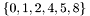

The Reflection API
Reflection in Gecode provides information about all the actors (propagators and branchings) and the variables in a Space. Gecode also enables the reverse direction: creating a variable or actor in a space, given a specification. Some use cases for reflection are- Serialization, which creates an external, platform-independent representation of a space that can be used to recreate a copy of the original space. This facilitates the development of distributed search engines, makes it possible to store instances of constraint problems, and can be used to transfer a problem instance from one solver to another.
- Visualization of variable domains or the propagators in a space can help with debugging scripts or propagators. Gecode's Gist uses reflection for visualization.
- Interfacing to other programming languages becomes easy, because only the generic unreflection functions have to be made available. The Qt-based JavaScript interpreter in examples/javascript.cc builds on reflection.
- Heuristics can be based on properties of the constraint graph, which is effectively exposed by the reflection API.
This tutorial is split in two parts:
Using the reflection API
The starting point for reflection in Gecode is a Space. The basic work cycle is to iterate over all the actors in a space using an ActorSpecIter, collecting the variables that the actors reference in a VarMap. The iterator returns an ActorSpec for each actor, and the VarMap contains a VarSpec for each variable. All the specifications in the VarMap can be accessed using a VarMapIter.
Gecode::Space* space = ... Gecode::Reflection::VarMap vm; Gecode::Reflection::VarMapIter vmi(vm); for (Gecode::Reflection::ActorSpecIter si(space, vm); si(); ++si) { Gecode::Reflection::ActorSpec aSpec = si.actor(); doSomethingForAnActor(aSpec); for (; vmi(); ++vmi) { Gecode::Reflection::VarSpec vSpec = vmi.spec(); doSomethingForAVariable(vSpec); } }
Note that new variables are added to vm when the specification for an actor is accessed (using si.actor()). The VarMapIter therefore always iterates all those variables that were added to vm for the current actor.
We will now go into the details of ActorSpec and VarSpec, and after that discuss the VarMap and the unreflection mechanism.
Accessing the specifications
Specifications for actors and variables are similar. For each actor or variable, a specification contains a Symbol (a string) representing its type (accessed asActorSpec::ati resp. VarSpec::vti), and a term representing its state (e.g. the current variable domain for variables, or the arguments of a propagator). Terms are represented as objects of the class Reflection::Arg and can be summarized by the following grammar:
term ::= INT | VAR | STRING
| [term,...,term] | [INT,...,INT] | (term,term)
| sharedObject(term) | sharedReference(INT)
The upper-case constructors stand for actual values; signed integers for INT, character pointers for STRING, and integers for VAR : variables are represented as indices into the VarMap.
The second line shows term constructors for arrays and pairs. There is special support for integer arrays. The constructors for shared objects in the third line have a similar purpose as the VAR constructor: a term, e.g. an array, that is shared between several actors, is introduced using a sharedObject constructor, and later referenced by a sharedReference. The shared references are counted in the order in which the shared objects are encountered.
The concrete representation of a variable's or actor's state depends on its concrete implementation. The following list will give you an idea of possible encodings:
- Domains of integer variables are encoded as arrays of integers, where two consecutive integers represent a range in the domain. For example, the domain  would be represented as
[0,2,4,5,8,8]. - The arguments of the distinct constraint with offsets are encoded as an array of pairs of integers and variables, like
[(0,q0),(-1,q1),(-2,q2),(-3,q3)] for the Queens model. - The DFA of an extensional constraint that uses a LayeredGraph is encoded into an array of integers, where each transition is represented by three integers, one for the input state, one for the symbol, and one for the output state. As DFAs can be shared between several propagators, they are wrapped in a
sharedObjectorsharedReference.
The VarMap
Several propagators can share the same variable, and reflection makes this sharing explicit. The VarMap contains one entry per variable that is referenced by an actor, and it is filled by iterating over the actors. The specification of an actor only contains an integer reference into the VarMap that was used when the specification was created.Reflection of variables is similar to copying, as only those variables will be put into a VarMap that are reachable from the actors. As with copying, variables can be added manually. Furthermore, a VarMap can store a name for each variable. The Space class has a virtual function Gecode::Space::getVars, which is used to fill a VarMap with the variables that the user is interested in.
The Queens example shows how to use getVars:
class Queens : public Example { public: virtual void getVars(Gecode::Reflection::VarMap& vm, bool registerOnly) { vm.putArray(this,q,"q", registerOnly); } };
The parameter registerOnly is needed for unreflection.
Unreflection
With unreflection, Gecode can create variables and actors in a space from a VarSpec or ActorSpec. The unreflection mechanism can be used for deserialization, or to implement an interface to Gecode.Assuming that the actor and variable specifications were stored in vectors, the basic setup for unreflection looks like this:
void unreflect(Space* home, std::vector<ActorSpec>& as, std::vector<VarSpec>& vs) { Gecode::Reflection::VarMap vm; Gecode::Reflection::Unreflector ur(home, vm); for (std::vector<VarSpec>::iterator it=vs.begin(); it != vs.end(); ++it) { ur.var(*it); // Create variables from specifications } for (std::vector<ActorSpec>::iterator it=as.begin(); it != as.end(); ++it) { ur.post(*it); // Post actors from specifications } }
After unreflection, the VarMap contains the created variables. If the variable specifications had names for the variables, the new variables can be accessed via their names, otherwise, they can only be accessed by their index into the VarMap. The indices are consecutive integers, starting at 0, and assigned in the order in which the variables were created.
The VarMap can be filled before you use unreflection. That way, existing variables can be mapped to the new variables via names, and the actors created by unreflection are posted on the existing variables. This is the purpose of the registerOnly argument of Gecode::Space::getVars. If it is true, only the names of the variables will be registered, but no index will be assigned for the variable in the VarMap:
... Gecode::Reflection::VarMap vm; home->getVars(vm, true); // Register variables Gecode::Reflection::Unreflector ur(home, vm); for (std::vector<VarSpec>::iterator it=vs.begin(); it != vs.end(); ++it) { ...
Generic variables
Gecode provides a generic variable class, Gecode::Reflection::Var. Generic variables can be obtained from any variable class that supports reflection. They provide a dynamically type-safe way of handling inhomogeneous collections of variables, for instance aVarArray that contains both integer and set variables.All variables can be constructed from a generic variable. At construction, a dynamic check is performed that guarantees that the generic variable is actually an instance of the variable type that is constructed. The variables in a VarMap can be accessed as generic variables:
... Gecode::Space* home = ... Gecode::Reflection::VarMap vm; space->getVars(vm); Gecode::Reflection::Var v = vm.var(0); // Get variable at index 0 Gecode::IntVar i(v); // Construct IntVar (with dynamic type check)
Branching specifications
A Gecode::Reflection::BranchingSpec provides a human-readable description of a Gecode::BranchingDesc. This is e.g. used by Gist, so that the user can see what actions the branchings took at each branch in the search tree.A BranchingSpec contains one ArrayArg per alternative, and each ArrayArg may only contain strings and variable references. The string concatenation of these arguments yields a human-readable description of the alternative:
void printAlternatives(Gecode::Space* home) { if (home->status() != SS_BRANCH) { std::cout << "no alternatives left" << std::endl; return; } const Gecode::BranchingDesc* d = space->description(); Gecode::Reflection::VarMap vm; space->getVars(vm, false); Gecode::Reflection::BranchingSpec bs = space->branchingSpec(vm,d); delete d; std::cout << "Alternatives:" << std::endl; for (unsigned int i=0; i<bs.alternatives(); i++) { std::cout << i << ": "; Gecode::Reflection::ArrayArg& aa = *bs[i]->toArray(); for (int j=0; j<aa.size(); j++) { if (aa[j]->isString()) { std::cout << aa[j]->toString(); } else if (aa[j]->isVar()) { int v = aa[j]->toVar(); if (vm.hasName(v)) std::cout << vm.name(v).toString(); else std::cout << "_v" << v; } } std::cout << std::endl; } }
Memory management
All the reflection classes provide memory management. This means that you must not free the argument objects, they are automatically deallocated when the ActorSpec, VarSpec, or BranchingSpec is deallocated. Copying specifications is cheap, as all classes use reference counting.Interfacing to Gecode through reflection
The (un-)reflection API makes interfacing to Gecode very easy. We provide a full JavaScript interface (through TrollTech's Qt library), and it only requires 150 lines of code.An interface can benefit from reflection in three ways:
- The generic Gecode::Reflection::Var class leaves the C++ part of the interface independent of the actual variable types that are supported. Every variable type supported by Gecode is automatically supported by the interface.
- Instead of a post function for every propagator and branching and variable creation functions for all the variable types, only the Gecode::Reflection::Unreflector has to be exported.
- All propagators and branchings that are supported by Gecode are immediately available through the interface. When propagators are added to Gecode, no new interfacing code has to be written. If the propagators are added as additional libraries, the interface does not even have to be recompiled.
Please refer to The Reflection Registry for more information on the propagators that are available through unreflection.
Adding reflection support to actors and variables
When the ActorSpecIter iterates over the actors of a space, each actor has to deliver its specification through the virtual function Actor::spec. When this function is called, the actor creates an ActorSpec with its actor type identifier (ati) and fills it with a representation of its arguments, encoded into objects of type Reflection::Arg. The specification for the views is delegated to the views or view arrays that the actor uses.We now go through the steps that are needed for reflection of actors and variables.
Propagators
Propagators implement the virtual function Gecode::Reflection::Actor::spec. It creates an ActorSpec with a proper actor type identifier and arguments. The following example provides reflection for a propagator with an IntViewx, a ViewArray of IntViews y, and an integer constant c:
class MyPropagator : public Gecode::Propagator { protected: IntView x; ViewArray<IntView> y; int c; public: // Return specification for reflection virtual Gecode::Reflection::ActorSpec spec(const Space* home, Gecode::Reflection::VarMap& m) const { Gecode::Support::Symbol ati("MyPropagator"); Gecode::Reflection::ActorSpec spec(ati); spec << x.spec(home, m); spec << y.spec(home, m); spec << c; return spec; } };
For a generic propagator, the types of its views must be part of the actor type identifier. All views have a static function type to enable this, and the reflection library contains name mangling functions:
template <class View0, class View1> class MyGenericPropagator : public Gecode::Propagator { protected: View0 x; ViewArray<View1> y; int c; public: // Return specification for reflection virtual Gecode::Reflection::ActorSpec spec(const Space* home, Gecode::Reflection::VarMap& m) const { Gecode::Support::Symbol ati = Gecode::Reflection::mangle<View0,View1>("MyGenericPropagator"); Gecode::Reflection::ActorSpec spec(ati); spec << x.spec(home, m); spec << y.spec(home, m); spec << c; return spec; } };
For unreflection, the actor must be registered. Gecode contains a global Gecode::Reflection::registry, mapping actor type identifiers to post functions.
In order to register a propagator, the propagator class has to provide two static functions, ati and post. Then the Gecode::Reflection::ActorRegistrar class can be used, or more conveniently, the GECODE_REGISTER macros. Here is a complete example:
template <class View0, class View1> class MyGenericPropagator : public Gecode::Propagator { protected: View0 x; ViewArray<View1> y; int c; public: // Constructor MyGenericPropagator(Space*,View0,ViewArray<View1>&,int); // Actor type identifier static Gecode::Support::Symbol ati(void) const { return Gecode::Reflection::mangle<View0,View1>("MyGenericPropagator"); } // Return specification for reflection virtual Gecode::Reflection::ActorSpec spec(const Space* home, Gecode::Reflection::VarMap& m) const { Gecode::Reflection::ActorSpec spec(ati()); spec << x.spec(home, m); spec << y.spec(home, m); spec << c; return spec; } // Posting the propagator from a specification static void post(Space* home, Reflection::VarMap& vars, const Reflection::ActorSpec& spec) { spec.checkArity(3); View0 x(home, vars, spec[0]); ViewArray<View1> y(home, vars, spec[1]); int c = spec[2]->toInt(); (void) new (home) MyGenericPropagator<View0,View1>(home,x,y,c); } };
Using the static function ati for both registration and reflection (in spec) makes sure that the type identifiers are the same.
The function checkArity makes sure that spec contains exactly 3 arguments and throws an exception otherwise. The accessor functions (like Gecode::Reflection::Arg::toInt) also check that the argument type matches. The reflection constructors for views and view arrays use these accesor functions, so an incorrect view type will be detected.
Now we can register the propagator. Note that we have to register each instance separately:
namespace { GECODE_REGISTER2(MyGenericPropagator<IntView,IntView>); GECODE_REGISTER2(MyGenericPropagator<IntView,OffsetView>); }
Branchings
Actor reflection for branchings is, in principle, the same as for propagators. However, if you subclass Gecode::ViewValBranching, all you have to provide aretype functions in your view and value selection classes. See Gecode::Int::Branch::ByNone<View>::type and Gecode::Int::Branch::ValMin<View>::type for examples.Branchings provide a second type of reflection. Given a Gecode::BranchingDesc, they can deliver a Gecode::Reflection::BranchingSpec. For this to work, you have to implement the virtual function Gecode::Branching::branchingSpec.
Please see the Gecode::ViewValBranching and the corresponding value selectors (Gecode::Int::Branch::ValMin<View>::branchingSpec) for examples.
Variables and Views
Reflection for variables and views is similar to reflection for actors. Each view class provides two functions:class MyView { public: Reflection::Arg* spec(const Space* home, Reflection::VarMap& m) const; static Support::Symbol type(void); };
Views delegate the reflection of the underlying variable to the variable implementation and just add their own arguments. For a concrete example, see Gecode::Int::IntVarImp::spec and Gecode::Int::OffsetView::spec.
The spec function of a view returns a reference to a variable. As a side effect, the actual VarSpec is entered into the VarMap.
Views and variables also have constructors for unreflection. Again, the Views delegate unreflection of the underlying variable. See Gecode::IntVar::IntVar(const Gecode::Reflection::Var&) and Gecode::Int::IntView::IntView(Space*, const Reflection::VarMap&, Reflection::Arg*).
For unreflection, the registry contains functions for creating, constraining, updating, and printing variable implementations. If a variable implementation implements the two functions create and constrain, it can be registered using a Gecode::Reflection::VarImpRegistrar. The generic variables (Gecode::Reflection::Var) use the registry to perform updates. For an example of how to implement the necessary functionality, see Gecode::Int::IntVarImp.